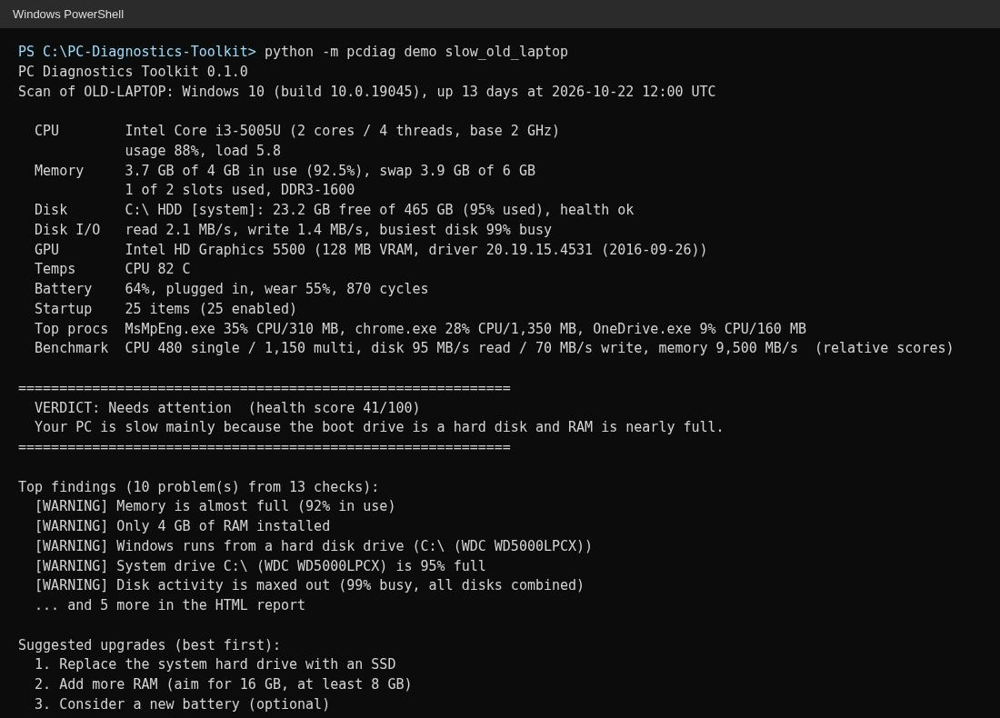
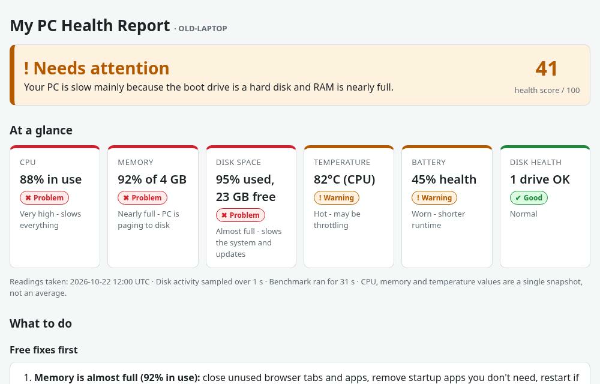
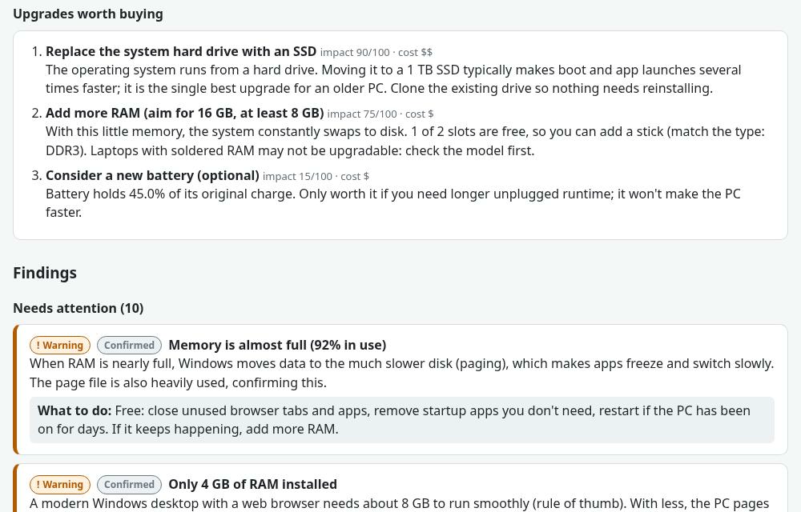

PC Diagnostics Toolkit
A Python tool that explains what is slowing a PC down, spots likely hardware faults (failing drives, worn batteries, overheating) and recommends upgrades that would actually help, with free fixes listed first.
Screenshots (select one to open it full size):
-

(opens full size in a new tab)1. A scan in the terminal: hardware summary, verdict, top findings and upgrades. -

(opens full size in a new tab)2. The HTML report: verdict, health score and an at-a-glance view. -

(opens full size in a new tab)3. Upgrades ranked by impact and cost, and findings with what to do.
Screenshots use the toolkit's built-in demo PC (example data, not a real machine).
How it works
You run one command, pcdiag scan, and the toolkit reads the PC's hardware and system data:
CPU, memory, drives and their health, temperatures, battery, running processes and startup apps.
A set of rules checks those readings for common problems and turns them into a verdict and a
health score out of 100. It then writes an easy-to-read HTML report that lists free fixes first and
ranks any upgrades worth buying by impact and cost. Anything it can't measure is shown as
"Can't tell" instead of being guessed as healthy.
Key features
- One-command scan of CPU, memory, drives, GPU, temperatures, battery and startup apps
- Health score out of 100 with a plain-language verdict and 17 diagnostic checks
- Self-contained HTML report (works in dark mode) plus raw JSON data
- Free fixes first, then upgrades ranked by impact and cost
- Optional speed benchmark, a compare command for before/after scans, and built-in demo PCs
- Live monitoring and bottleneck analysis (in testing)
Built with:
View on GitHub (PC Diagnostics Toolkit)